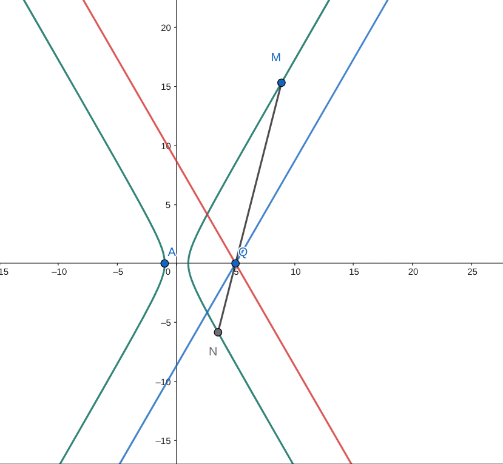

已知圆 \(C_1: (x+2)^2+y^2=\frac{25}{4}\), 圆 \(C_2: (x-2)^2+y^2=\frac{1}{4}\), 动圆 \(C\) 与 \(C_1,C_2\) 都外切．
求圆心C的轨迹方程
设 \(A(-1,0)\), \(M,N\) 是圆心 \(C\) 轨迹上的不同两点，过点 \(A\) 作 \(AH\perp MN\) 垂足为 \(H\), 若直线 \(AM\) 与 \(AN\) 的斜率之积等于 \(-2\), 求动点 \(H\) 轨迹的长度
解答
\(x^2-\dfrac{y^2}{3}=1(x>0)\), 注意只有右半边
\(\dfrac{5}{3}\pi\)
\(MN\) 过 \(Q(5,0)\), 所以 \(H\) 一定在 \(AQ\) 为直径的圆上, 半径为 \(\dfrac{5}{2}\).
极限思想得到这个圆弧有 \(120^{\circ}\), 因此弧长为 \(\dfrac{5}{3}\pi\)
这件事情来自双曲线的渐近线的性质:
取一个定点, 比如这里的 \(Q\), 然后 \(M\) 在双曲线上, 无穷远处, 那么 \(MQ\) 的斜率就会趋向于渐近线的斜率
因此, 可以在图上比划看看, 发现: \(MN\) 的斜率, 要么大于 \(\sqrt{3}\), 要么小于 \(-\sqrt{3}\), 一边 \(60^{\circ}\), 两边加起来就 \(120^{\circ}\)
如下图, \(MN\) 一定会被夹在红色和蓝色直线之间, 这两条线就是渐近线过 \(Q\) 的平行线

tags: 斜率积, 过定点, 隐藏的圆